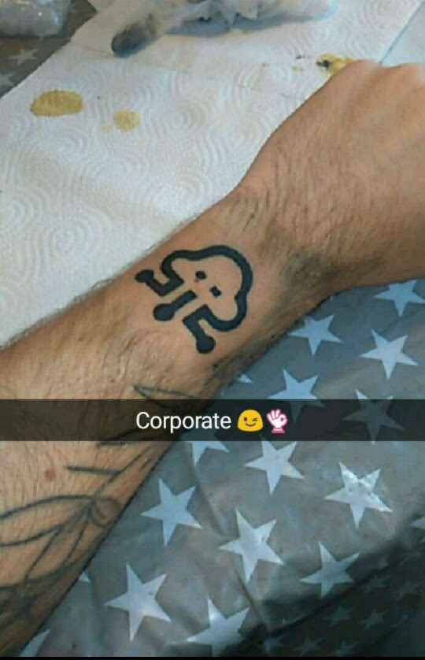
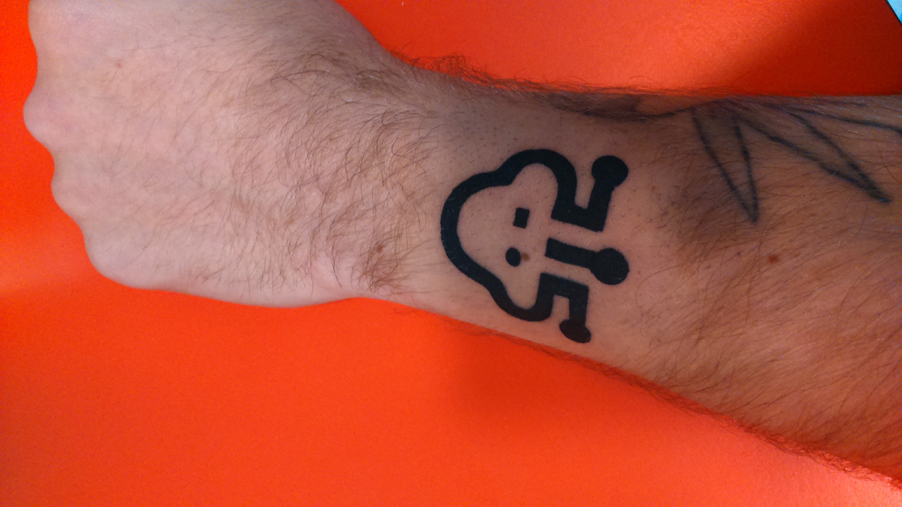

Bonjour à tous, j’écris cet article pour parler de mon nouveau tatouage, qui n’est que le logo d’Ineat.
Avant toutes choses définissons ce qu’est un tatouage, et pourquoi en faire un.
Qu’est ce qu’un tatouage ?
Un tatouage est un dessin décoratif et/ou symbolique réalisé en injectant de l’encre dans la peau. Auparavant, il était effectué avec de l’encre de Chine ou des encres à base de charbon ou de suif. De nos jours il est plus couramment utilisé de l’encre contenant des pigments industriels. Il existe différentes couleurs d’encre et même une encre transparente qui ne réagit qu’à la lumière noire : ce type de tatouage est appelé tatouage « UV » ou « Blacklight ». Le tatouage est considéré comme un type de modification corporelle permanente.
La technique du tatouage consiste à injecter l’encre sous la peau à l’aide d’aiguilles ou d’objets pointus. L’encre est déposée sous la peau entre le derme et l’épiderme. La profondeur de la piqûre varie de 1 à 4 mm en fonction des types de peau et des parties du corps, les zones les plus épaisses se situant dans le dos, les coudes et les genoux.
Le tatouage est pratiqué depuis plusieurs milliers d’années dans le monde entier. Il peut être réalisé pour des raisons symboliques, religieuses ou esthétiques. Dans plusieurs civilisations, il est même considéré comme un rite de passage à cause de la douleur endurée lors de la réalisation du motif.
— source wikipedia
Pourquoi fait on vraiment un tatouage ?
De nos jours le tatouage a perdu son sens profond à mon gout, les gens se tatouent pour diverses raisons :
- Pour suivre l’effet de mode
- Pour s’identifier à sa star préférée
- Dans un but purement esthétique
- Pour être unique, mais au final tout le monde fait les mêmes motifs, donc il n’y a plus d’unicité
- Sur un coup de folie ou un verre de trop
- …
Pour moi toutes ces raisons ne sont pas valables, et dénature le tatouage.
Un tatouage ne doit pas être un acte que l’on fait sur un coup de tête, ou une décision que l’on prend à la légère. Le tatouage doit être un acte murement réfléchi. C’est un symbole, un dessin, que l’on porte normalement à vie (il existe des moyens très onéreux et douloureux pour enlever un tatouage de nos jours).
Un tatouage doit avoir une signification forte pour le tatoué, un souvenir, une étape dans sa vie, un évenement marquant tragique ou joyeux … .
Mon ami et collègue Jerome Vasseur m’a dit, je cite :
“Un tatouage n’a de sens que pour celui qui le porte.”.
Ce n’est que ma vision du tatouage, après chacun a sa propre opinion, voici un article que je trouve intérréssant.
La raison de mon tatouage
Oui j’ai le logo Ineat ou Poulpy pour les intimes sur la peau. Certains diront que je suis fou, que s’est absurde, qu’ils ne trouvent pas ça esthétique … .
Mais comme dit ci-dessus pour moi le tatouage n’as pas d’intéret esthétique, chacun de mes tatouages représentent pour moi quelque chose de fort.
Ineat représente pour moi un tournant dans ma vie, la fin de mes études, le début de ma carrière professionnelle, ma première entreprise, ma première chance de faire mes preuves, et bien sûr un séminaire de folie ^^.
Ineat est une grande étape de ma vie ! Et fera partie à jamais de mon parcours.
Voilà pourquoi je me suis fait tatouer ce nouveau logo, et même si pour x raisons je viendrai à partir d’Ineat je n’aurais aucuns regrets !
Merci pour tous INEAT !
 